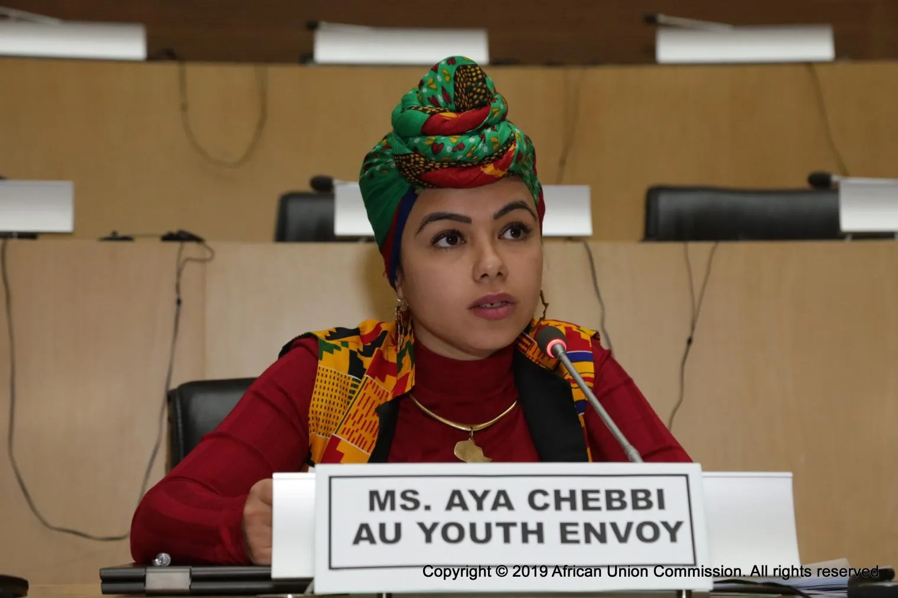
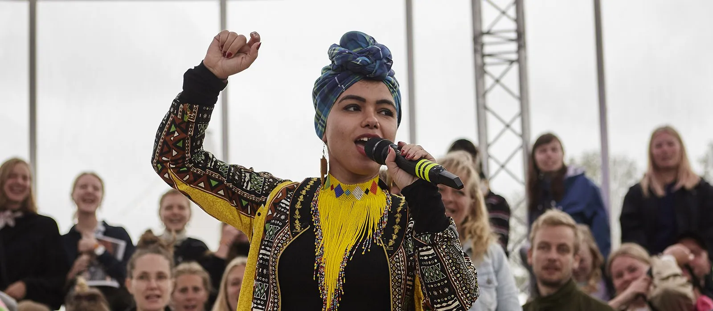
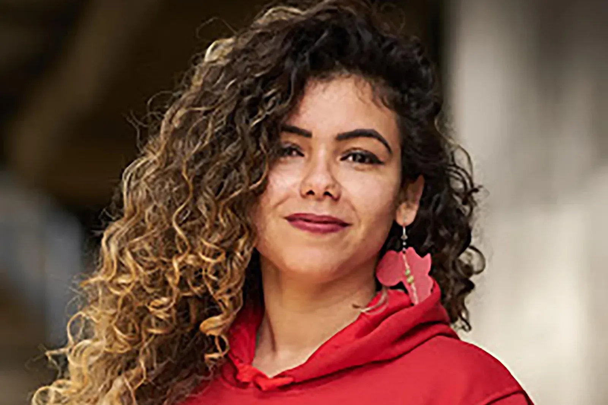
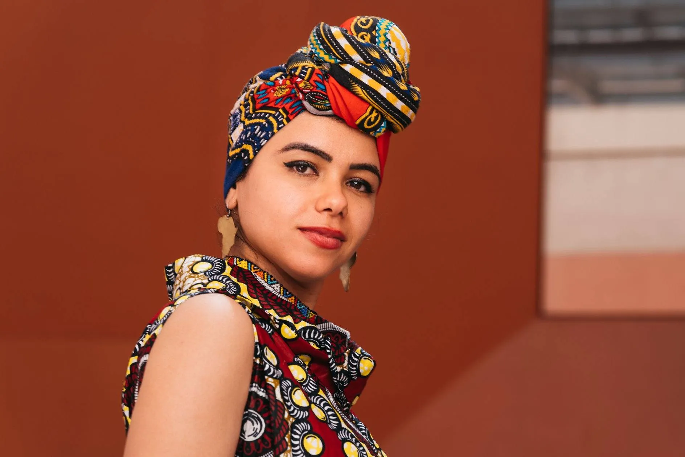
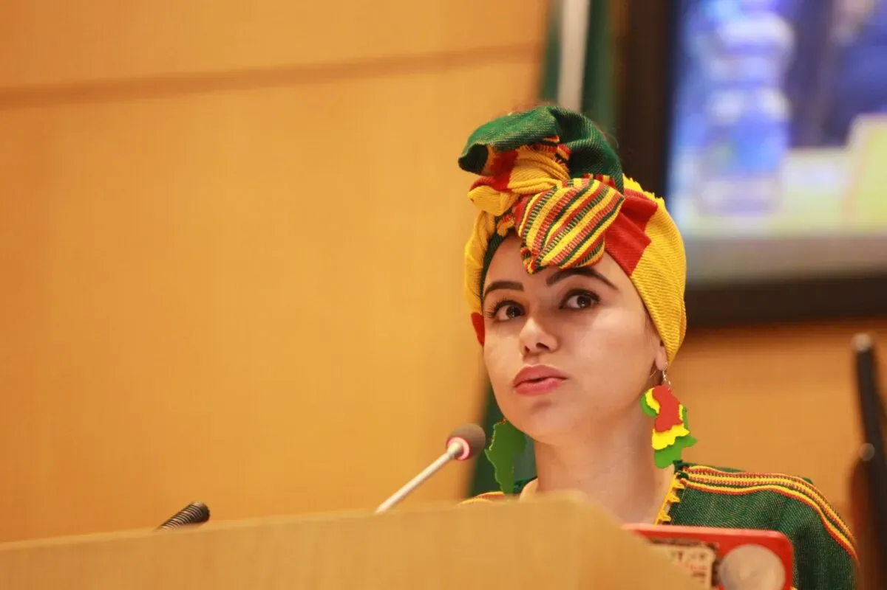

Aya Chebbi: The Voice That Gave Africa’s Youth a Seat at the Table
In the land of jasmine and revolution, a young woman rose, not from royalty, not from privilege, but from passion, pain, and power. Her words were her weapon. Her pen, a protest. Her spirit, a storm. That woman is Aya Chebbi, Tunisian by birth, African by calling, and global by impact.
Some leaders hold offices. Some shake podiums. But Aya Chebbi does something rarer, she awakens generations. She is not just a changemaker. She is the megaphone of a movement, a voice that roars with the fire of ten thousand silenced women.
From Blogger to Beacon
Aya’s journey began with words. During the 2011 Tunisian Revolution, the uprising that sparked the Arab Spring, she began blogging. Not just about politics, but about powerlessness. About dignity. About what it meant to be a young woman in a world that demanded silence from her gender.
Her blog became more than a digital diary. It became a battlefield. A classroom. A shrine. And young people, especially young African women, listened. And followed. And rose.
When the smoke cleared, Aya Chebbi wasn’t just a witness of the revolution. She had become one of its loudest voices.
Africa’s First AU Youth Envoy, and a Disruptor by Design
In 2018, she was appointed as the first-ever African Union Youth Envoy, a title that might sound ceremonial. But Aya doesn’t do ceremony.

She transformed that office into a movement.
- She traveled to over 30 countries, listening not just to politicians but to students, artists, street vendors, and rebels.
- She launched #AfrikaYouthSpeak, amplifying the unheard, not the elite.
- She confronted patriarchal systems, colonial residue, and economic exclusion with words that struck like thunderclaps.
Her message? Africa does not have a youth problem. It has a leadership problem.
The Birth of Nala, and the Rise of Feminist Power
Aya didn't just stop at youth. She turned her fire toward feminism.
She co-created the Nala Feminist Collective, an intergenerational group of African women leaders, intellectuals, activists, diplomats, and dreamers, who believe that feminism isn’t a Western import. It is an African inheritance.
Through Nala, Aya is:
- Empowering women across the continent with training, mentorship, and visibility.
- Challenging the status quo in policymaking and peace-building
- Telling the world that African women will no longer ask for a seat at the table. They are building their own table. And bringing others with them.
Nala isn’t just a think tank. It’s a thunderstorm. And Aya Chebbi is its lightning rod.
Global Recognition, But Always Rooted
From the UN to the World Economic Forum, from BBC to Forbes to the Gates Foundation, Aya’s work has been recognized and celebrated globally.
She’s shared stages with presidents and prime ministers, but she never forgets why she started: to speak for those who could not, would not, or were never allowed.
Aya represents a rare breed of changemaker:
- She is intellectual and intuitive.
- Fierce and feminine.
- Diplomatic, yet unapologetically defiant.
Giving Her Flowers, While She’s Still Planting Them
Aya Chebbi doesn’t wait to be celebrated. She celebrates others. She uplifts. She shatters ceilings so others don’t have to duck. But that’s exactly why she deserves her flowers now.
Because while others talk about the “future is female,” Aya is already building that future, in real time, with real results.
She is not just part of a feminist generation.
She’s leading it.
To You, The Next Aya in the Making

You may not have a platform yet. You may not even know where to begin.
But Aya Chebbi started with a blog. With her voice. With her refusal to be silent.
So take a page from her story:
Write. Speak. Lead. Protest. Build.
And never wait to be invited.
Because as Aya herself would say, “If you don’t speak, they will speak for you. If you don’t move, they will move without you. And if you don’t claim power, they will keep it from you.”
Spotlite Africa salutes Aya Chebbi.
For lighting fires in the hearts of African women.
For standing firm in a storm of doubt.
For choosing to be both thunder and the rain.
Long may her voice echo. And long may others rise because of it.